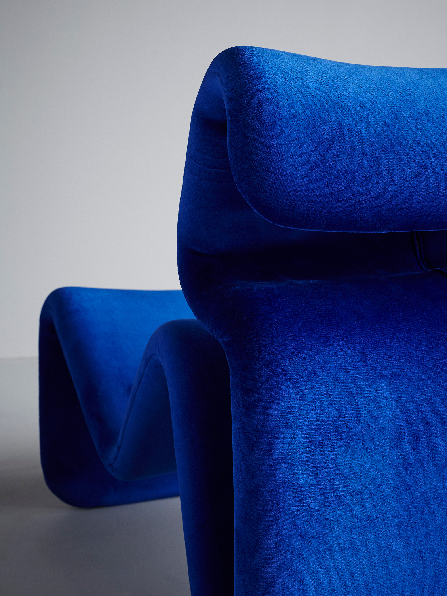
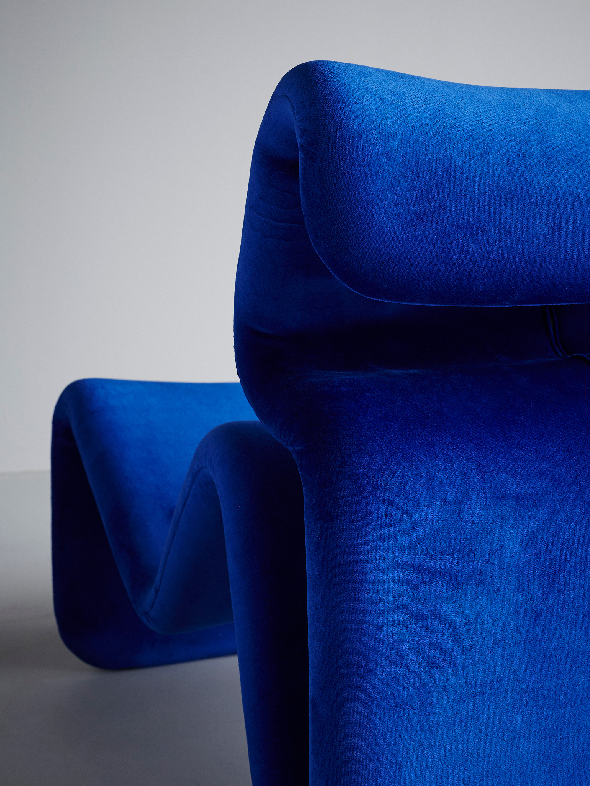

Jan Ekselius
Fauteuils Etcetera
Description : Ce fauteuil "Rouleau" est une pièce sculpturale qui incarne parfaitement l'esprit ludique et le confort radical des années 1970. Il est conçu pour rompre avec la rigidité angulaire du mobilier classique, privilégiant une esthétique de la rondeur et de la douceur enveloppante. Sa silhouette atypique repose sur l'empilement audacieux de volumes cylindriques généreux, évoquant des rouleaux de matière souple ou une vague prête à déferler, invitant à une posture de détente informelle et décomplexée.
Structure : La conception repose probablement sur une structure interne en mousse de polyuréthane haute densité, sculptée pour obtenir ces formes rebondies sans armature apparente, ou sur une ossature bois minimale. L'ensemble est habillé d'un velours bleu roi (ou bleu électrique) intense et lumineux, dont la texture soyeuse accentue les courbes par un jeu de reflets chatoyants, transformant le siège en un véritable objet de désir tactile.
Dimensions : H. (Hauteur totale) : 75 cm, L. (Largeur) : 80 cm, P. (Profondeur) : 85 cm.